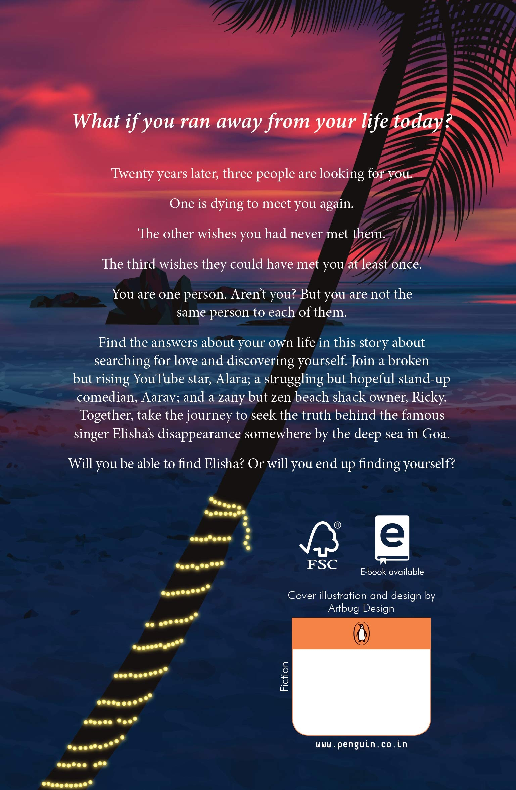

You Only Live Once- One For Passion Two For Love Three For Friendship


“ For me, “ long has been as long as the day I was born, and might stretch to the day when I take my last breath” – Alara
About The Book--
Alara is a broken but rising YouTube star who has a huge fan base that loves her singing. She and her dad moved from India to the Czech when she was quite young. They moved because her mother Elisha went missing.
No one knew where she disappeared. She was a huge singing sensation of her time and people admired her. She used to sing in beach shacks in Goa.
Alara’s Dad married Irena exactly a year after Elisha went missing. Alara grew up and naturally desired to visit the place where she was born just in the hope to find her lost mother.
Aarav is a final year engineering student who bagged a summer internship in Pune at HSBC in their IT team and his boss is all praises of him.
He Aarav recently broke up with Tara which left him devastated. He couldn’t contain the emotional turmoil he had to suffer each day of his life and missed her terribly.
He had always wanted to become a stand-up comedian but could not because of his family’s wishes.
He used to visit Ricky’s beach shack in Goa every Saturday where Ricky would invite him to perform and that used to help him relax just a bit.
Ricky is the owner of the shack and he loves Goa and its beaches in their entirety. He loves to run every morning by the beachside which has become a routine for him.
Earlier, Elisha would sing and he would play the drums at the famous The Hippie Trails Cafe. He feels Elisha be his first love and misses her deeply. He could never move on from her.
Alara reads Ramy’s blog – on the open road as he is her favorite blogger.
Alara was able to convince her dad and after a long journey, she reached Goa. She later finds a place to stay at Maria’s PG and Madhuri, the caretaker guides her through.
Parvathi who is her fan and now also a friend helped her find the PG. Alara had visited Ricky’s before and had also met Aarav.
Later she realizes that Ricky knew her mother and that he could help her find her. Time flows and Aarav develops a bond with Alara and they both fell in love.
Alara who has vowed to find her mother is doing everything she can to find her or at least get a clue as to where she is.
She always hoped that she would find her someday and that she needed to keep searching for her. Later Ricky and Aarav along with Parvathi help her to search for any clues.
One day she discovers a box full of her mother’s written songs in the PG’s attic. She is shocked as well as happy to find such a treasure. She now knows whom to approach and how to go about the search.
Will she be able to find her mother? Read You Only Live Once? to know!
This story is a beautiful journey of three people who discover themselves at the end after days of struggle and gloom. It is of friendship, love, and hope that one should never let go.
About the Author
Stuti Changle
Stuti Changle is the bestselling author of the much-loved books ‘ On The Open Road’ and ‘You Only Live Once’ who is on a mission to inspire people by sharing life-changing stories.
She truly believes that each one of us, no matter where we come from, has that one idea that holds the potential to touch a million lives.
Her first book ‘ On The Open Road’ won notable mentions in Amazon Kindle’s Pen to publish competition.
Her second book ‘ You Only Live Once’ rose to Amazon Bestseller charts in a month of its release making it one of the highly successful self-published books in the Indian market.